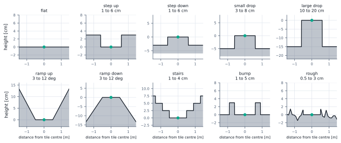
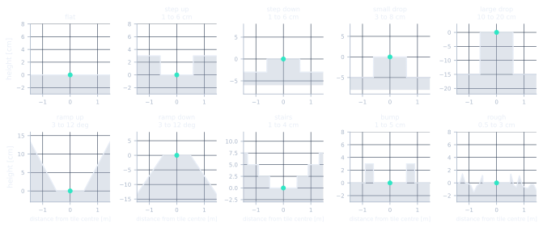

Setup and method
What was built, and how it was checked
TL;DR. Two physics engines (a CPU reference and a GPU engine that runs 4096 robots at once, checked against each other). A planar model of the robot derived from first principles, which gives an LQR controller with no tuning on the simulator. A reinforcement-learning loop (PPO) that lives entirely on the GPU, with the exact observation, reward and randomisation written out below. A library of terrain tiles, floor materials and 13 robot designs. And the evaluation protocols, each with its metric definitions. One engine bug that invalidated a year of randomised results is described honestly in section 1.
This page is the foundation of the results page: every equation, every setting, every protocol. Read it when a result makes you ask "measured how?". Terms link to the glossary.
1 Software stack
Two engines, one robot model
The robot is a cylindrical body on a solid ball, driven by three omniwheels spaced 120 degrees apart whose contact points lie 51.2 degrees from the top of the ball. Each omniwheel is a capsule with anisotropic friction (0.001 along the roller direction, 1.0 across it). Physics runs at 500 Hz; controllers act at 100 Hz (a 10 ms control period).
MuJoCo's contact frame is not guaranteed to align the low-friction axis with the roller axis, so a contact-frame correction recomputes the frame between collision detection and constraint construction; it is applied in both engines. Table S1 lists the components and what was verified about each.
Software components. Engine validation used the LQR (no learning); the numbers are from the engine report and the study log.
| Component | Role | What was verified |
|---|---|---|
| MuJoCo 3.13 / 3.17, CPU, float64, implicit-fast integrator, Python contact-frame stepper | Reference engine; all early (CPU) results | Implicit-fast gives 1.10 ms per control step against 3.26 ms for RK4; policies trained on RK4 give the same speed curves within 0.01 m/s on implicit-fast (study log). |
| MuJoCo-Warp 3.17, GPU, float32, contact-frame fix as a custom kernel inside a CUDA graph | Training engine (4096 worlds in parallel) | Fall and no-fall outcome parity 193 of 204 (94.6 percent) for speed tests and 784 of 816 (96.1 percent) for push tests over 17 designs with the LQR; speed ratios of runs that do not fall agree within 0.01 (experiments/mjx_port/REPORT.md). Throughput 355k control steps per second at 4096 worlds against 1.36k for one CPU process, about 260 times. |
| Torch tensors viewing the Warp arrays, PPO in PyTorch | Observation, reward, resets, command sampling, pushes and PPO updates all on the GPU | Host synchronisations per control step cut from 29 to 1; end to end 52k to 67k environment steps per second with the same learning curve. |
| CPU renderer, NVENC encoder | Videos only (one Warp world replayed on a checkerboard floor) | Rollouts are re-simulated, not recorded from training. |
What this means. Results trained on the GPU engine can be trusted to the extent the LQR parity shows: the same outcome in about 95 percent of tests. Warp is not bit-reproducible and is the harsher engine by a few falls in the policy-transfer checks.
An engine pitfall found late: stale subtree mass under mass randomisation
When body masses are randomised per world in a batched model, every quantity derived from them must be recomputed too. One was not, for a long time.
The engine locates each body subtree's centre of mass by dividing mass-weighted positions by a stored body_subtreemass and uses that point as the reference of the dynamics. The training code randomised body_mass (ball and base) but never updated body_subtreemass, so the reference point was wrong by a fraction of the robot's distance from the world origin (the tiles lie up to 12 m away), and the error vanished exactly at the nominal mass. Evidence (LQR alone, clean flat world, 64 worlds, falls at 0.3 and 0.6 m/s): nominal 0.12 and 0.16; ball mass randomised, 0.41 and 0.81 before the fix and 0.17 and 0.23 after. The fix recomputes the subtree masses from the per-world masses at every reset.
What this means. Every run and evaluation with randomisation on before the fix is superseded and is not shown anywhere on this site; everything with randomisation off was unaffected. The rule: after changing any per-world mass, check the quantities derived from it, and compare a randomised run against the nominal one far from the origin.
A second engine pitfall: a 1000 to 1 anisotropic friction cone in float32
The omniwheel rollers are modelled as anisotropic friction at the wheel-ball contact: almost free along the roller axis, full grip across it. That ratio was too large for the float32 solver.
The wheel-ball contact pairs had friction 0.001 along the roller axis and 1.0 across it, with the elliptic cone, and the contact-frame fix aligns the 0.001 direction with the roller axis. In MuJoCo-Warp (float32) that 1000 to 1 cone is ill-conditioned when the contact is nearly stationary: a standing robot at 1 to 2 degrees of tilt can have its state turn non-finite in a single 10 ms step, preferentially on the designs where the ball is heavy relative to the body. Because a non-finite state is counted as a fall by the termination rule, every 20 s standing fall rate measured before the fix was an artefact (results page, chapter 8), while driving and the 8 s battery were almost untouched. Contact buffer size, the solver type, warm starts, iteration counts, the arrestors, randomisation and the height field were ruled out one by one in a diagnostic of 880 standing worlds (log entry S98). Raising the free-rolling coefficient to 0.01 gives zero non-finite worlds with the real falls unchanged (0.002 already leaves 1 world of 880), so 0.01 is the model default for all later training and evaluation; the policies trained at 0.001 are re-evaluated at 0.01 where a standing number is quoted. The free-rolling coefficient of real omniwheel rollers was never measured here. Lesson: with per-world randomised contact parameters in a batched float32 engine, keep friction ratios within the solver's conditioning and test standing still, not only motion.
One observation quirk, kept on purpose
The original CPU environment builds its motor_state input from qvel[joint.id], which indexes the base free joint, not the wheel degrees of freedom. The policies therefore receive scaled base-velocity components in those three slots and never see wheel encoders. A first GPU port that read the true wheel rates failed on the CPU engine until the quirk was copied exactly. As trained, the policies do not use wheel odometry.
2 Physics model
Derived planar dynamics
A ballbot leans to accelerate, like a person on a unicycle. The planar model describes one vertical plane of that motion with two coordinates, the ball's rotation and the body's tilt, and is derived here from the robot's masses and geometry. All numbers below are recomputed from ballbot_gym/models/ballbot_planar_model.json by site/build_data.py, which also checks them against the formulas.
Omniwheel transmission
Let \(\boldsymbol\Omega\) be the angular velocity of the ball relative to the body. Wheel \(i\) has spin axis \(\boldsymbol a_i\), contact point \(\boldsymbol p_i\) on the ball, effective radius \(r_w\) and rim direction \(\boldsymbol t_i\). Because the passive rollers absorb the orthogonal component, rolling without slip in the driven direction gives
In the pitch plane the wheel rates are \(\boldsymbol n\,\Omega_y\) with \(\boldsymbol n=W_{:,2}=(3.61,-1.11,-2.50)\), so the three rotors act as one reflected inertia and damper:
Numerically \(\lVert\boldsymbol n\rVert^2=\) 20.51, so \(J_{\rm eff}=\) 0.1025 kg m\(^2\) and \(d_{\rm eff}=\) 2.05 N m s.
What this means. The reflected rotor inertia is about 188 times the ball's own inertia: the drive, not the ball, dominates the rotational inertia the controller sees.
Equations of motion
In one vertical plane take \(q=(\varphi,\theta)\), the ball rotation and the body tilt. The ball position is \(x=r\varphi\), the body centre of mass is at \((x+l\sin\theta,\ l\cos\theta)\), and the wheels turn with \(\varphi-\theta\). With \(m_a,l,I_a\) the body mass, COM height above the ball centre and pitch inertia, and \(m_k,r,I_k\) the ball mass, radius and inertia,
The motor torque \(\tau\) and the wheel damping act on the relative coordinate, \(Q=(\tau-d_{\rm eff}(\dot\varphi-\dot\theta))(1,-1)^{\!\top}\). The Euler-Lagrange equations give
Parameters extracted from the simulator model: \(m_a=3.853\) kg, \(l=0.1306\) m, \(I_a=0.0366\) kg m\(^2\), \(m_k=0.168\) kg, \(r=0.09\) m, \(I_k=5.44\times10^{-4}\) kg m\(^2\), \(J_w=0.005\) kg m\(^2\), \(d_w=0.1\) N m s, torque limit 30 N m per wheel. Linearising about the upright equilibrium with state \(s=(\varphi,\theta,\dot\varphi,\dot\theta)\) gives \(\dot s=As+B_s\tau\) with
The 3-D linearisation decouples into two such planes plus a yaw channel.
Structural properties
With \(d_{\rm eff}=0\) the poles are \(\{0,0,\pm\lambda\}\), \(\lambda=\sqrt{m_agl\,M_{11}/\det M_0}\) (5.23 1/s). With the wheel damping the unstable pole is 4.79 1/s, so an unactuated lean grows by a factor \(e\) every 0.21 s.
The transfer function from motor torque to ball position has a real zero pair \(\pm z\) with \(z=\sqrt{m_agl/(I_a+m_al^2+m_alr)}\), independent of \(J_{\rm eff}\) and \(d_{\rm eff}\); numerically \(z=\) 5.78 1/s. To accelerate forward the body must first tip forward, which pushes the ball backward by reaction: the system is non-minimum phase.
Derivation of Propositions 1 and 2
Linearised, \(M_0s^2\hat q+Ds\hat q+K\hat q=B\hat\tau\) with \(K=\mathrm{diag}(0,-m_agl)\). With \(d_{\rm eff}=0\) the characteristic polynomial is \(\det(M_0s^2+K)=s^2(\Delta s^2-m_agl\,M_{11})\), \(\Delta=\det M_0\), which gives Proposition 1. By Cramer's rule the numerator of \(\hat\varphi/\hat\tau\) is \((M_{22}+M_{12})s^2-m_agl\): the terms in \(J_{\rm eff}\) and \(d_{\rm eff}\) cancel because they enter only through the relative coordinate \(\varphi-\theta\), and \(M_{22}+M_{12}=I_a+m_al^2+m_alr\). Setting the numerator to zero gives \(z\).
Adding the two rows of the equations of motion removes \(\tau\) and \(d_{\rm eff}\):
Under quasi-static lean the ball acceleration \(a=r\ddot\varphi\) satisfies the lean law \(\sin\theta=\kappa a\) with
Numerically \(\kappa=\) 0.176 rad per m/s\(^2\) (10.2 degrees per m/s\(^2\)).
Derivation of Proposition 3
The row sums of \(M\) are \(M_{11}+M_{12}=I_k+(m_a+m_k)r^2+m_alr\cos\theta\) and \(M_{12}+M_{22}=I_a+m_al^2+m_alr\cos\theta\); the \(J_{\rm eff}\) terms cancel. The sum of the two rows of \(B\tau\) and of \(D\dot q\) vanishes because \((1,1)B=(1,1)D=0\). Setting \(\ddot\theta=\dot\theta=0\), \(\cos\theta\approx1\) and \(a=r\ddot\varphi\) gives the stated \(\kappa\).
What this means. A lean of one degree buys only about 0.1 m/s\(^2\) of acceleration, and the 30 degree off-ball limit caps quasi-static acceleration near 2.8 m/s\(^2\). That is why timid policies are timid, and why fast response is bounded by the zero at 5.78 1/s. Known mismatches with the simulator: soft ball-floor contact lets the ball creep on sudden accelerations, and measured wheel rates differ from \(W\) by a constant 27 to 28 percent (the effective rolling radius of the capsule contact).
3 Model-based controller
LQR with a reference governor
An LQR (linear quadratic regulator) is the feedback gain that minimises a weighted sum of state error and control effort for a linear model. Here it is designed on \((A,B_s)\) only, with no tuning on the simulator beyond three outer-loop constants.
For each plane the cost \(\int(s^{\!\top}Qs+R\tau^2)\,dt\) with \(Q=\mathrm{diag}(10^{-6},50,1,1)\), \(R=1\) and the feedback \(\tau=-K(s-s_{\rm ref})\). The continuous Riccati solution is \(K=(K_0,K_\theta,K_{\dot\varphi},K_{\dot\theta})\) with \(K_0=-0.001\), \(K_\theta=\) -76.14, \(K_{\dot\varphi}=\) -4.33 and \(K_{\dot\theta}=\) -11.58 (negative entries because \(B_s\) has a positive torque convention on \(\varphi\) and negative on \(\theta\)); the fastest closed-loop pole is -20.3 1/s.
Discrete time at the control period
A continuous design with light rotors has a pole so fast that it is unstable when sampled at 100 Hz. The controllers used with the GPU stack are therefore designed in discrete time with a zero-order hold at \(T=0.01\) s: \(A_d,B_d\) from the matrix exponential, the discrete Riccati equation with \(QT\) and \(RT\), and \(K_d=(RT+B_d^{\!\top}XB_d)^{-1}B_d^{\!\top}XA_d\). For the nominal design \(K_{d,0}=-0.001\), \(K_{d,\theta}=\) -73.87, \(K_{d,\dot\varphi}=\) -4.21, \(K_{d,\dot\theta}=\) -11.23. The same code builds one gain per robot design from that design's own planar model.
Reference governor, integral action and yaw
A step in the velocity reference demands an impulsive torque because of the non-minimum-phase zero, so a reference governor moves the reference toward the command at most \(a_{\max}=0.5\) m/s\(^2\) (a lean of about 5 degrees by Proposition 3):
The slow integral \(\xi\) on the measured body velocity removes the steady-state error caused by contact creep (it is why the LQR reaches an achieved-over-commanded ratio of 1.00; an earlier claim that it is also essential for standing still over 20 s rested on a measurement voided by the standing blow-up described below and in chapter 8 of the results page, and is unverified). The planar state is \(s=(0,\theta,\dot\varphi-\dot\varphi_{\rm ref},\dot\theta)\) in each plane; yaw uses \(T_z=-k_\psi(\omega_{\rm cmd}-\omega_z)\) with \(k_\psi=5\). The planar torques and \(T_z\) form the ball torque in world axes, mapped to the wheels by \(\boldsymbol\tau_w=W^{-\top}R^{\!\top}\boldsymbol T\) and normalised to \(a_{\rm LQR}=\mathrm{clip}(-\boldsymbol\tau_w/\tau_d,\pm1)\). A batched version of exactly this law runs on the GPU (experiments/warp_ppo/lqr_gpu.py).
What this means. The LQR is precise wherever the planar model is right and fragile where it is not: it tracks slow commands to within a few percent and falls at speed, under pushes, and on designs whose ball mass is far from nominal.
4 Learning problem
GPU-resident PPO, exactly as coded
PPO (proximal policy optimisation) trains a neural-network policy by trial and error, improving it a little at a time so that each update stays close to the last. Everything below mirrors experiments/warp_ppo/train_dev.py.
Observation
The policy input is the 25-number vector below, optionally followed by a stack of the last \(K\) (observation, action) pairs, a 6-number design vector, and a sensor vector. Observation noise (Gaussian noise added to what the policy sees, when randomisation is on) applies to slots 0 to 8 only.
Observation layout. Sigma is 0.01. With history 8 and the design vector the main runs see \(25+8\cdot28+6=255\) numbers.
| Slots | Content | Notes |
|---|---|---|
| 0 to 2 | body orientation as a rotation vector | noise sd 0.25 sigma |
| 3 to 5 | body angular velocity (clipped at 8) | noise sd 2 sigma |
| 6 to 8 | body linear velocity (clipped at 8) | noise sd 1 sigma |
| 9 to 11 | motor_state: base free-joint velocity components divided by the torque limit, clipped at 2 | the quirk of section 1, not wheel rates |
| 12 to 14 | previous action | |
| 15 to 17 | command \((v_x,v_y,\omega_z)\) | from the goal rule in goal mode |
| 18, 19 | sine and cosine of the body yaw | |
| 20, 21 | velocity-error integral \(\xi_{\!v}\leftarrow\mathrm{clip}(\xi_{\!v}+(c-v)\cdot0.01,\pm1)\) | |
| 22 to 24 | goal error divided by 2 and clipped at 2 (two numbers), goal flag | zero outside goal mode |
Action, commands, goals
The action is a normalised wheel-torque vector \(a_t\in[-1,1]^3\) applied as \(\tau=\mathrm{clip}(\kappa\,\tau_d\,a,\pm\tau_d)\), with \(\tau_d\) the design's torque limit and \(\kappa\sim\mathcal U(0.85,1.15)\) per episode under randomisation. Velocity commands are resampled every 300 control steps: zero with probability 0.1, otherwise speed \(\mathcal U(0,1.2)\) m/s times the design factor \(\sqrt{r_{\rm ball}/0.09}\) (Froude scaling: speeds scale with the square root of the size so that dynamics stay similar), direction uniform, yaw rate \(\mathcal U(-1,1)\) rad/s. Episodes last 800 steps (8 s).
In goal mode the command is a saturating proportional rule on the goal error \(g-p\), so speed is free up to a cap while the same tracking reward still applies:
Goals are drawn 0.7 to 1.8 m away; on arrival within 0.2 m a world with waypoints left draws the next goal. With cross-focus a goal is, with probability 0.6, placed 1.1 to 1.3 m from the tile centre along a tile axis, so reaching it means crossing the terrain feature.
Reward
With \(e=\lVert v-c_{xy}\rVert\), \(\hat c=c_{xy}/\lVert c_{xy}\rVert\), \(p=v\cdot\hat c\), \(e_\omega=|\omega_z-c_\omega|\), \(\ell\) the lean along the command and \(\beta\) the ball-offset angle, the reward in train_dev.py is
The first four terms pay for matching the commanded speed and yaw rate; the lean term pays for leaning toward the command while still below it. A fall is a tilt above 70 degrees, a ball offset above 30 degrees, or a non-finite state; leaving the 2.9 m tile square truncates the episode without penalty.
PPO
A diagonal Gaussian policy with a learnable log standard deviation and a tanh MLP (width 512, three hidden layers). The loss is the clipped surrogate plus a value term, with no entropy bonus:
\(\gamma=0.995\), \(\lambda=0.95\); 4096 worlds times 64 steps per iteration, 5 epochs of 8 minibatches, Adam with learning rate \(3\times10^{-4}\) decaying to \(3\times10^{-5}\), early stop at approximate KL 0.03, running reward and observation normalisation. The actor sees only deployable inputs; the asymmetric critic (the value network used only during training) additionally sees floor friction, mass and torque offsets, wheel damping, a local height scan and the design vector.
What this means. Nothing in the reward values looking ahead: a policy that sees a step is paid for matching its commanded speed, not for slowing down before it. That shapes what the perception results (results page, chapter 12) can and cannot say.
5 Hybrid
LQR base plus a bounded learned residual
The residual controller lets the LQR do the balancing and the policy add a bounded correction. In the environment step, \(a=\mathrm{clip}\big(a_{\rm LQR}+r_s\,a_\pi,\ \pm1\big)\), where \(a_\pi\) is the policy output and \(r_s\) the residual authority. The LQR runs inside the environment from the true simulator state at every control step with one gain set per design; latency, torque scaling and pushes act on the sum. The policy output layer starts near zero, so training starts from the plain LQR.
What this means. With \(r_s=0\) this is the pure LQR; with \(r_s=1\) the policy can override it entirely. The results page shows that 0.25 is the knee between tracking accuracy and robustness.
6 World
Terrain tiles, floor materials and robot designs
Terrain tile library
The GPU engine holds one height field shared by all worlds, so per-world terrain comes from one 24 m tile map of 8 by 8 tiles. Each world picks a tile at reset; features sit symmetrically around the tile centre so that any heading meets them; a world is truncated, not penalised, when it leaves the 2.9 m square around its tile centre. Figure M1 and Table A show the ten kinds.


experiments/warp_ppo/tiles.py; no simulation. Engine: not applicable (geometry only). Domain randomisation: not applicable. Seeds: map seed 0, the same 64 tiles in training and evaluation. Worlds: not applicable.Terrain kinds. Map 24 m, 3.4 cm cells, tiles of 3 m, truncation outside 2.9 m. Source: experiments/warp_ppo/tiles.py (seed 0). Geometry only: no engine, randomisation, noise or seeds apply.
| Terrain kind | Severity range | Profile | Tiles of 64 |
|---|---|---|---|
| flat | none | no feature | 7 |
| step up | 1 to 6 cm | single raised step 0.6 m from the centre on each axis | 7 |
| step down | 1 to 6 cm | robot stands on a plateau, floor drops by the severity | 7 |
| small drop | 3 to 8 cm | drop of 3 to 8 cm | 7 |
| large drop | 10 to 20 cm | drop of 10 to 20 cm | 6 |
| ramp up | 3 to 12 deg | slope over 1.0 m starting 0.5 m from the centre | 6 |
| ramp down | 3 to 12 deg | descending slope over 1.0 m | 6 |
| stairs | 1 to 4 cm | 2 to 3 treads of 0.4 m, riser = severity | 6 |
| bump | 1 to 5 cm | slab 0.3 m wide, 0.6 m from the centre | 6 |
| rough | 0.5 to 3 cm | smooth two-octave noise outside a flat 0.5 m start zone | 6 |
Floor materials
With floor classes on, each world draws one of seven materials: a ball-floor sliding friction (jittered by plus or minus 15 percent) and a contact time constant standing in for softness. The values are plausible, not measured. Table B lists them.
Floor material classes used when floor randomisation is on. Source: experiments/warp_ppo/train_dev.py. Values are plausible, not measured.
| Floor class | Sliding friction mu | Contact time constant [s] |
|---|---|---|
| concrete | 0.9 | 0.020 |
| hardwood | 0.6 | 0.020 |
| carpet | 1.1 | 0.045 |
| grass | 0.8 | 0.050 |
| gravel | 0.7 | 0.030 |
| wet tile | 0.3 | 0.020 |
| rubber | 1.3 | 0.020 |
Robot designs
Thirteen designs were compiled; they share one topology, so the 25 model fields that differ are stacked and assigned per world. Eleven are used in training; s0.5 (half scale) and J0005 (very light rotors) were dropped early as unlearnable. Command speeds scale with the square root of the ball radius, pushes with the mass. Table C lists what each design changes.
The 13 compiled robot designs. Source: ballbot_gym/models/variants/dz_*.json and configs/env/dz_*.yaml. Geometry and mass properties only; no engine or randomisation applies. The eleven designs marked yes form the training set of every main run.
| Design | What it changes | Body mass [kg] | Ball mass [kg] | COM height l [m] | Rotor inertia [kg m^2] | Torque limit [N m] | Contact zenith [deg] | In training set |
|---|---|---|---|---|---|---|---|---|
| nom | reference robot | 3.85 | 0.168 | 0.131 | 0.005 | 30 | 51 | yes |
| zhigh | ballast raised: COM height about 1.9 times nominal | 3.85 | 0.168 | 0.254 | 0.005 | 30 | 51 | yes |
| zlow | ballast lowered: COM height about 0.67 times nominal | 3.85 | 0.168 | 0.087 | 0.005 | 30 | 51 | yes |
| kb4 | ball mass x4 | 3.85 | 0.672 | 0.131 | 0.005 | 30 | 51 | yes |
| bal4 | body ballast x4 (body mass 3.5 times nominal, pushes scaled) | 13.45 | 0.168 | 0.124 | 0.005 | 30 | 51 | yes |
| J02 | wheel rotor inertia x4 | 3.85 | 0.168 | 0.131 | 0.02 | 30 | 51 | yes |
| tau6 | torque limit 6 N m (one fifth) | 3.85 | 0.168 | 0.131 | 0.005 | 6 | 51 | yes |
| bal025 | ballast x0.25 (body mass 0.38 times nominal) | 1.45 | 0.168 | 0.145 | 0.005 | 30 | 51 | yes |
| kb025 | ball mass x0.25 | 3.85 | 0.042 | 0.131 | 0.005 | 30 | 51 | yes |
| zeta41 | wheel contact zenith 41 deg (nominal 51) | 3.85 | 0.168 | 0.132 | 0.005 | 30 | 41 | yes |
| zeta66 | wheel contact zenith 66 deg | 3.85 | 0.168 | 0.129 | 0.005 | 30 | 66 | yes |
| s0.5 | half scale (all lengths x0.5, masses x0.125) | 0.48 | 0.021 | 0.065 | 0.0001563 | 1.875 | 51 | no (dropped) |
| J0005 | rotor inertia x0.1 | 3.85 | 0.168 | 0.131 | 0.0005 | 30 | 51 | no (dropped) |
What this means. Two of the eleven training designs stress the controller hardest, and the picture changed with the S98 correction (results page, chapter 8): with the wheel-ball free-rolling friction at 0.01, the quarter-mass ball kb025 unseats within the first second in about a quarter of standing worlds and half of driving worlds, the four-times base mass bal4 falls in about a fifth of driving worlds, and the heavy-ball designs kb4 and bal025, which the voided numbers had blamed, stand for 20 s at 0.00. Every other design stands and drives at 0.00 to 0.02 over 20 s.
7 Domain randomisation
What is randomised, with ranges
Domain randomisation draws the robot's physical parameters, the floor, the terrain and the disturbances at random for every world, so that the policy must work on a family of robots rather than one. All ranges are drawn per world at reset unless marked "per step". Standard runs use scale 1; the wide-randomisation runs multiply the mass, friction, torque, damping-spread, latency-probability and noise ranges by a master scale that ramps from 1 to 1.75 over the first half of training (push and pull strength are not scaled by it). When randomisation is off, noise, latency, pushes, pulls, torque scale and parameter jitter are all off. Table D is the full list.
Domain randomisation. Source: configs/env/dz_nom.yaml (the ranges) and experiments/warp_ppo/train_dev.py (how they are applied; each statement was matched against the source by site/build_data.py). Engine: Warp GPU. Randomisation: this table is the randomisation.
| Quantity | Range | When | Notes |
|---|---|---|---|
| Robot design | one of 11 designs, uniform | per episode | Table C |
| Base mass and ball mass | each times (1 plus uniform plus or minus 0.15) | per episode | independent draws |
| Wheel-ball transverse friction | times (1 plus uniform plus or minus 0.20) | per episode | the cross-roller direction of the anisotropic pair |
| Wheel damping | uniform 0.07 to 0.15 N m s times the design's nominal damping over 0.1 | per episode, each wheel | master scale widens the spread around 0.1 |
| Torque scale | 1 plus uniform plus or minus 0.15 | per episode | applied to the commanded torque |
| Action latency | with probability 0.2 the previous action is applied instead | per control step | probability capped at 0.6 when scaled |
| Observation noise | Gaussian, sigma 0.01 (orientation 0.25 sigma, angular velocity 2 sigma, linear velocity 1 sigma) | per control step | slots 0 to 8 only |
| Pushes | horizontal force 5 to 20 N (times the design push factor), random direction, 5 control steps (50 ms) | every 2 to 4 s | factor = push range of the design over 20 N |
| Pulls | horizontal force 3 to 12 N, random direction, 0.5 to 2 s | every 4 to 10 s | only in runs with pulls on; not scaled per design |
| Floor material | one of 7 classes; friction times (1 plus uniform plus or minus 0.15) | per episode | Table B |
| Terrain tile and start | uniform over 64 tiles; start offset uniform plus or minus 0.3 m; start yaw uniform over a full turn | per episode | Table A |
| Master scale (wide runs) | multiplies mass, friction, torque, damping spread, latency probability and noise ranges; 1 to 1.75 over the first half of training | per iteration | does not scale pushes or pulls |
What this means. A result "with DR on" means the controller was tested on 11 designs with randomised masses, friction, motors, latency, noise and floors; "DR off" means the nominal robot with none of that. Every table says which.
8 Evaluation
Protocols and metric definitions
All GPU evaluations use experiments/warp_ppo/eval_tiles2.py (and eval_battery.py, which runs the standard set) with a deterministic policy, a fixed seed and no command resampling; the first fall of a world freezes it. Every evaluation file records its settings (push scale, randomisation scale, tile seed, design list, arrestors) in its name and inside the JSON, after an early lesson in which results overwrote each other silently. Table E lists the protocols.
Evaluation protocols. All on the Warp GPU engine unless the row says otherwise.
| Protocol | Setup | Metrics |
|---|---|---|
| Clean flat benchmark | Perfectly flat 24 m world, interior tiles only (at least 7.5 m from the map border, see the note below), nominal design, randomisation off, constant command 0.3, 0.6 or 0.9 m/s at a random heading, 800 steps; 64 worlds per row (the LQR calibration: 32). | Steady-state error \(\lVert v-c\rVert\) and achieved speed \(v\cdot c/\lVert c\rVert^2\), both averaged over steps 300 to 799 of worlds still upright; fall rate = share of worlds that fell at any time; falls at the map edge recorded separately. |
| Velocity task on tiles | 0.3 m/s at a random heading, 11 designs by 10 terrain kinds by 16 repeats (1760 worlds), randomisation and floor classes on; undisturbed = pushes and pulls off, disturbed = pushes 5 to 20 N and pulls 3 to 12 N. | Fall rate, tracking error (mean over upright steps), per-kind falls. |
| Goal task | Goal 1.1 m from the start at a random heading, same layout, 800 steps; undisturbed and disturbed as above; also at randomisation scales 1.75 and 2.5. | Success = within 0.2 m of the goal before any fall; fall rate; median time to goal; success per terrain kind (176 worlds) and per design. |
| Long-horizon flat | Flat interior tiles, 20 s, 11 designs by 32 worlds, randomisation on, no pushes; standing still or driving at 0.3 m/s; wheel-ball free-rolling friction 0.01 since S98 (train_dev --pair-mu1 defaults to 0.01; runs from before S98 have no args.json entry and keep 0.001, and the evaluation scripts follow args.json unless PAIR_MU1 overrides it, which is recorded in the file's env_settings); a non-finite state is now classified separately from a fall; standing numbers from runs at 0.001 are void (second engine pitfall, section 1). | Fall rate per design. |
| Scale study | One policy trained on the 11 designs plus the robot at 0.75, 1.5 and 2 times nominal size (masses scaled with the cube, commands Froude-scaled, arrestors re-fitted); velocity task at 0.3 m/s Froude-scaled on the tiles, 20 s, 128 worlds per terrain kind and size, with the drawn height of every world's feature recorded; the 0.5 scale is held out. | Fall rate per half of each feature range and per height bin, against the traction limit 0.29 r. |
| Navigation course | Blocks map (8 cm blocks around the start), goal 1.2 m away behind a block, 48 worlds per design (528), 20 s, frozen controller with a planner and a hazard source (none, perfect map, or a simulated sensor). | Reached goal, fell, stuck, rolled onto a block, commanded heading-rate RMS. |
| Held-out terrain and designs | The goal task on a freshly generated tile map (tile seed 1), or on the designs s1.5 and tau3 that no 11-design policy trained on (160 worlds per design). | As the goal task. |
| Engine cross-check | eval_design protocol on both engines with the LQR: speeds 0.4, 0.8, 1.1 times the square root of the design scale (4 trials each), pushes of 0.5, 1 and 1.5 body weights (16 per level). | Speed ratio, falls, push falls. |
| CPU baseline protocol | 8 directions by speeds up to 1 m/s, 2 repeats, heading test from 6 random start yaws, 30 random-command episodes, nominal robot. | Ratio, RMSE, heading error, action rate, falls (earlier study). |
Methods note: the flat benchmark and the map edge
The first version of the flat benchmark placed its worlds on the tile positions of the normal protocol, including the border tiles of the 24 m height field, 1.5 m from the edge. With tile exits disabled, a robot driving outward left the map and was counted as a fall; a per-fall position record showed that most recorded flat falls were such drop-offs, which also made falls appear to rise with commanded speed. The benchmark now uses interior tiles only and keeps a falls-at-map-edge field in every evaluation file; the flat rows of every battery were re-run, and the results page shows the corrected column. The steady-state error and achieved speed were computed over surviving worlds and are unaffected by the artefact (the re-run, being a fresh sample, moved them by a few thousandths).
What this means. With 1760 worlds a fall rate near 0.5 has a binomial standard error of about 0.012, a terrain kind (176 worlds) about 0.04, and a 64-world row about 0.06; these cover world-to-world sampling only. Seed noise, the spread between identical training runs, was measured separately at about 0.02 in goal success on the corrected engine. Single-seed rows are labelled as such everywhere.